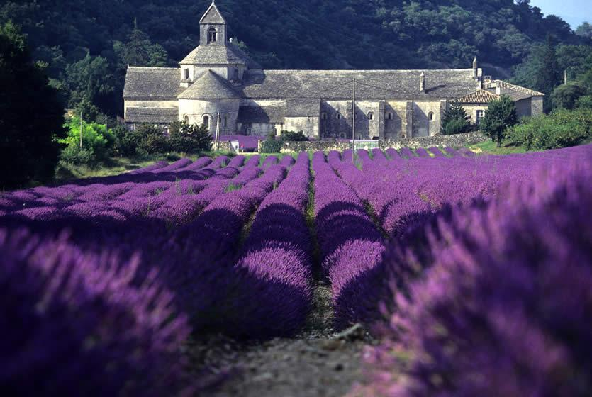

Yvoire
Gordes est un magnifique village perché situé dans le département du Vaucluse, en Provence, dans le sud de la France. Niché au sommet d'une colline escarpée, Gordes offre une vue imprenable sur la vallée du Luberon et est souvent considéré comme l'un des plus beaux villages de France.

En vous promenant dans les rues de Gordes, vous découvrirez des places animées, des fontaines rafraîchissantes et des terrasses ombragées. Le centre du village abrite également le château de Gordes, une imposante forteresse médiévale qui domine la ville. Vous pouvez explorer ses jardins et admirer la vue panoramique sur les environs.
Les environs de Gordes sont tout aussi captivants. La région du Luberon offre des paysages spectaculaires avec ses collines couvertes de vignobles, ses champs de lavande parfumés et ses oliveraies verdoyantes. Vous pouvez explorer la campagne environnante à pied, en vélo ou en voiture, en découvrant des villages pittoresques, des marchés provençaux animés et des paysages naturels préservés.
